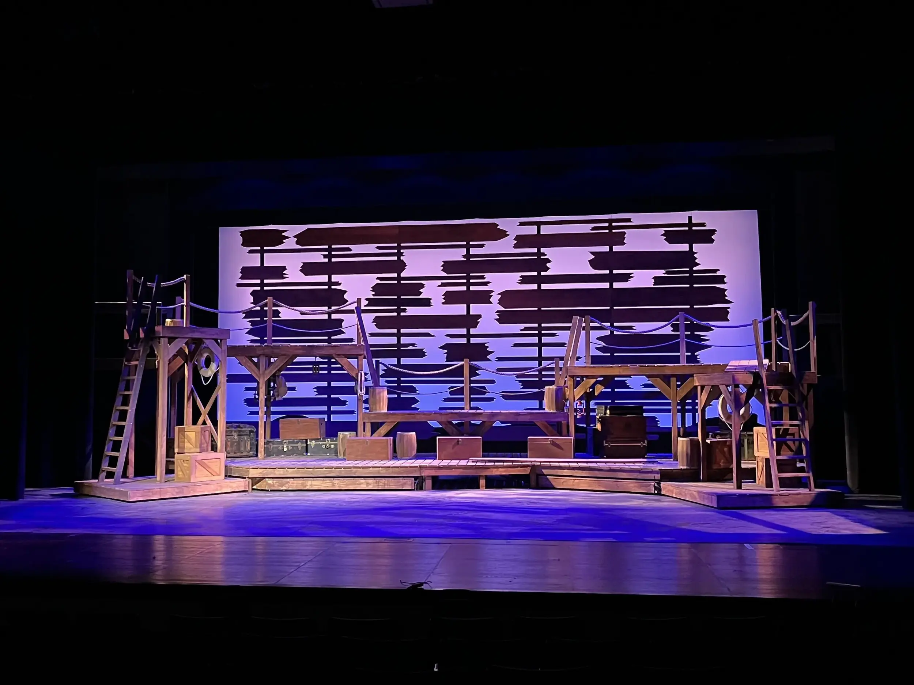
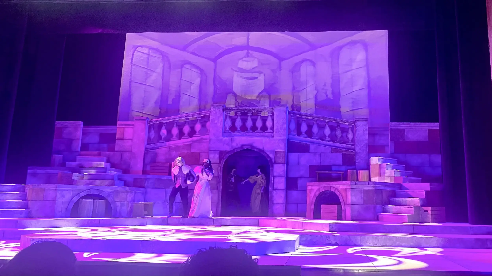
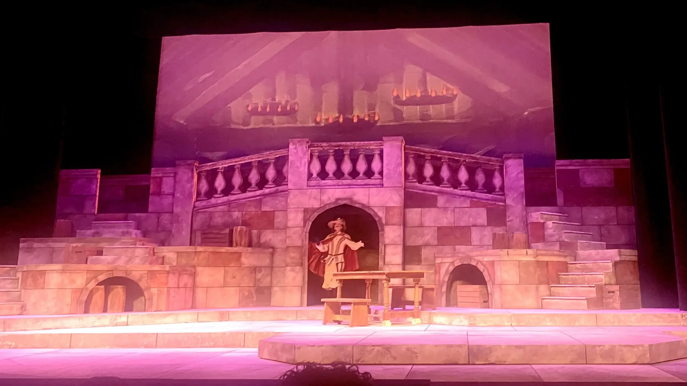
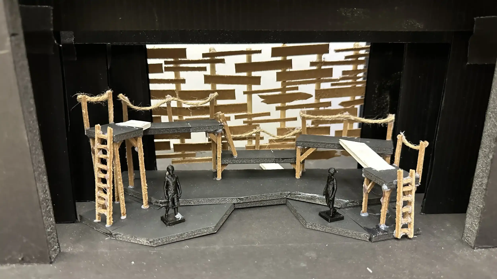
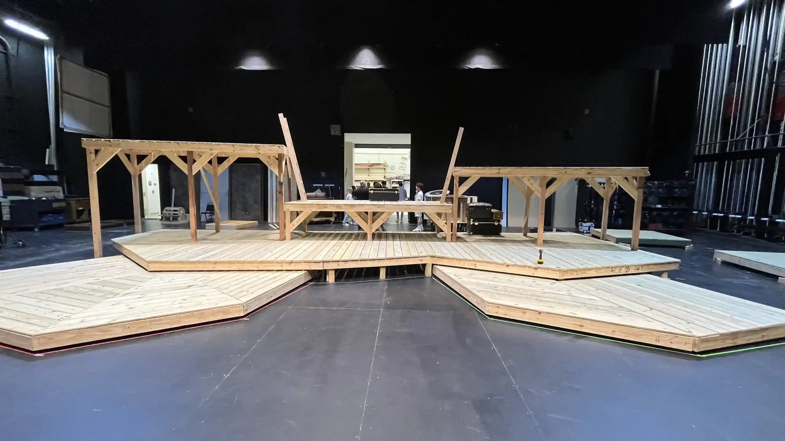
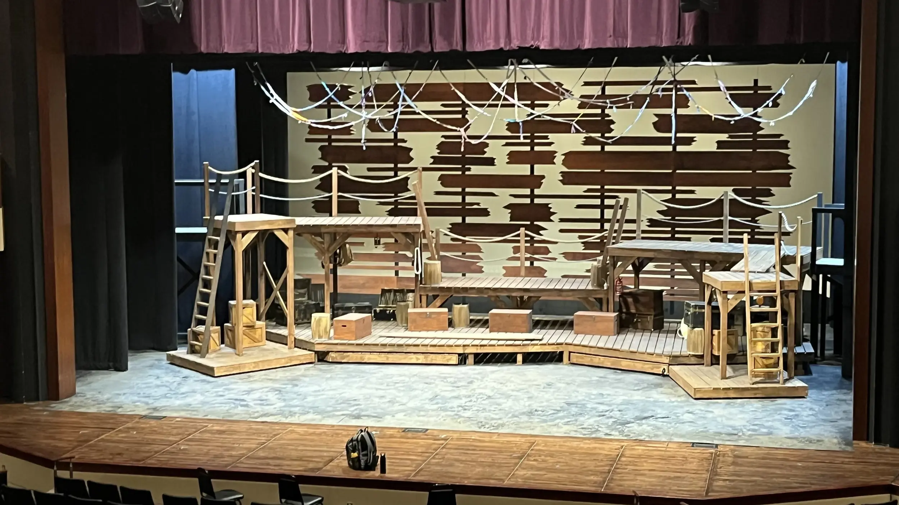
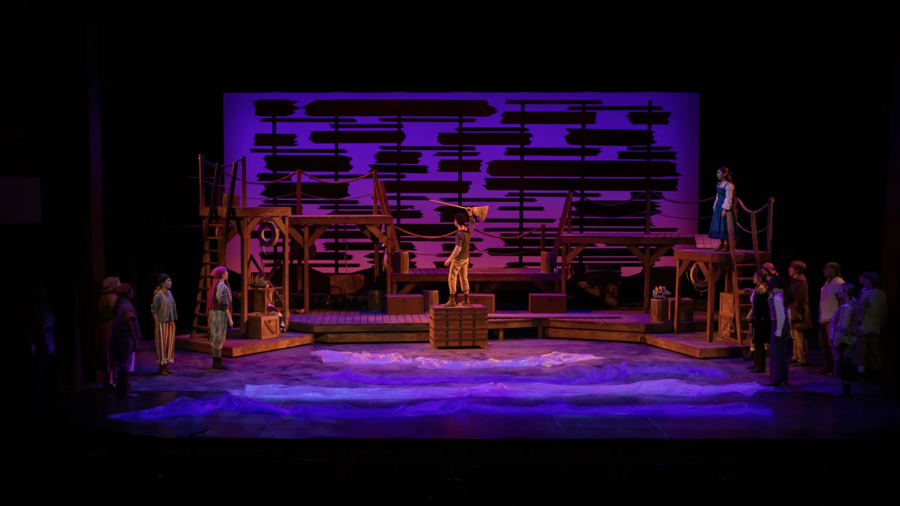
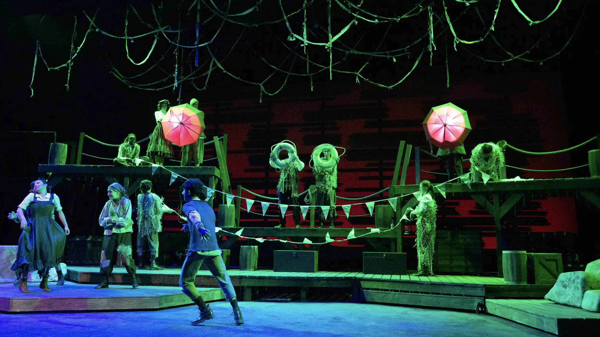
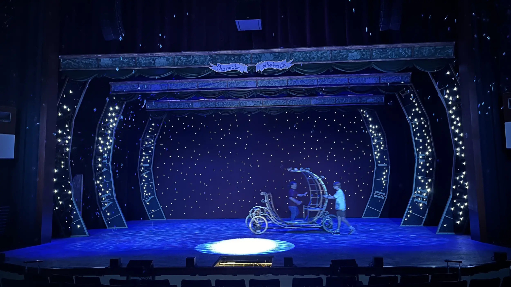
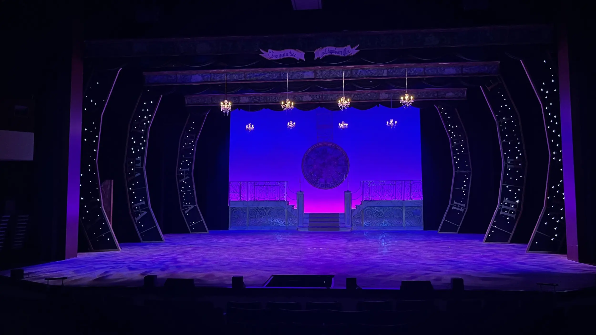

Showcasing my work in technical theatre from high school.

Overview
Throughout high school, I was heavily involved in the technical theatre program, taking on various leadership and design roles.
In my sophomore year, I assistant stage managed Carrie: The Musical, coordinating with cast and crew, carrying out set changes, and executing practical effects like the iconic blood drop. After the show, I created a Blender animation for a song from the musical. The production won Best Technical Execution at the Tommy Tune Awards. See Fig. 1 for the animation.
In my junior year, I assistant stage managed The Three Musketeers, managing props backstage, directing scene changes, and writing cues for and operating an automated platform to move between scenes. I also designed projections with the director's input to complement the set and lighting. See Fig. 2 and Fig. 3 for the ballroom and tavern projections, respectively.


Additionally, I assistant stage managed The Hello Girls, writing cues for and operating the turntable during musical numbers and scene changes.
As a senior, I stage managed Peter and the Starcatcher and co-designed the set and lighting with the technical director. As stage manager, I wrote all cues, called the show, wrote rehearsal reports, and communicated between the cast, crew, and directors. As co-set designer, I built a physical model with multiple levels and platforms, and designed two manual moving platforms for the cast members to pull out of the set to differentiate the scenes, one platform that rotates and one that slides. Additionally, I designed two platforms that could be swapped during intermission to switch the set from a ship with tall platforms in Act 1 to an island with rocks in Act 2. See Fig. 4 for the model of the set in Act 1, Fig. 5 for the set in progress, and Fig. 6 for the final set in Act 1.



As co-lighting designer, I collaborated with the director and technical director and programmed the cues on the light board. See Fig. 7 and Fig. 8 for lighting in Acts 1 and 2.


I also stage managed Rodgers and Hammerstein's Cinderella, which won several awards including Best Musical and Best Lighting Design at the Tommy Tune Awards. I was also nominated as a finalist for Best Stage Management. See Fig. 9 and Fig. 10 for photos of the lighting.


Beyond these productions, I stage managed one-act plays and controlled the lights and sound for Children's Theatre productions.